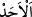
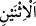
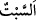

olması içindir. Çünkü ondan önce yaratılanlar, varlık ülkesindeki tebea mevkiindedir.
Ordusuz, tebeasız halife olmaz. Hilafeti teşrif ve tekrim için tebaa, halifeden önce
yaratılmıştır.
Bilesin ki zaman da dönen ilk burç terazinin cevheridir. Ve onda gecesiz gündüzsüz
günler meydana gelmiştir. Gece ve gündüzün meydana gelmesi ise dördüncü semadaki
güneşin meydana gelişi ve doğudan batıya bir usule göre dönüşüyle olmuştur. Ukletü’l-
Müstevfiz isimli kitapta böyle denilmektedir.
Günlerden ilk yaratılan pazar günüdür. Pazar günü (  ) ilk gün demektir. Allah
Teâlâ, ikinci günü yaratınca “isneyn” (  ) yani pazartesi ismini vermiştir. Çünkü o,
ilk günün ikincisidir. Mahlukatın yaratıldığı günlerin ilki cumartesi günüdür. Bu
takdirde altı günün sonuncusu perşembedir. Şu halde cuma yedinci gündür.
 (cumartesi) rahat demektir. Yahudiler Cenab-ı Hak, gökleri, yeri ve onlarda
bulunanları yarattığı için bu yedinci cumartesi günü istirahat ettiğini zannettiler. Onların
bu iddiaları şu âyetle yalanlanmıştır: “Bize hiçbir yorgunluk dokunmamıştır.” (Kaf,
20/38). Cumartesiyi (sebt) yorgunluk günü (yedinci gün) kabul edince, onlara göre
haftanın ilk günü pazar günü olur. Hristiyanlara göre de böyle olduğundan pazarı tercih
ettiler.
Hz. Peygamber (a.s.)’a cumartesi günü soruldu da: “O, hile ve düzenbazlık
günüdür.”[9] buyurdu. Çünkü Kureyş kabilesi o gün Daru’n-nedve’de tuzak kurmuşlardı.
Hz. Mevlana (k.s.)’a: “Allah cumartesiyi ve perşembeyi mübarek kıldı”[10]
şeklindeki rivayet sorulunca, “Onların bereketi cuma gününe komşu olmalarındandır.”
demiştir.
Hz. Peygamber (s.a.)’e Pazar günü soruldu da: “Ekim (dikim) ve imar günüdür.”[11]
buyurdu. Çünkü Allah Teâlâ dünyayı yaratmaya ve imara o gün başlamıştır. Bir
rivayette de “cennetin o gün kurulup (ağaçlarının) dikildiği”[12] haber verilmiştir.
Pazartesi günü sorulunca: “Yolculuk ve ticaret günüdür.”[13] buyurmuştur. Çünkü
Şuayb (a.s.) o gün seyahat etmiş ve ticareti kazançlı olmuştur.
Salı günü de soruldu da Efendimiz (s.a.): “Kan günüdür.”[14] buyurdu. Çünkü Havvâ
validemiz o gün hayız görmüş, Âdem’in oğlu kardeşini o gün öldürmüş, Cercis,
Zekeriya ve oğlu Yahya (a.s.), Fir’avn’un sihirbazları ve Fir’avn’un karısı Âsiye binti
Müzahim ve İsrailoğulları’nın ineği o gün öldürülmüştür.
Hz. Peygamber (s.a.) salı günü hacamattan şiddetle nehyetmiş ve şöyle buyurmuştur:
“O günde bir saat vardır ki o vakit kan aldırılınca durmaz.”[15] Kan kesildikten sonra